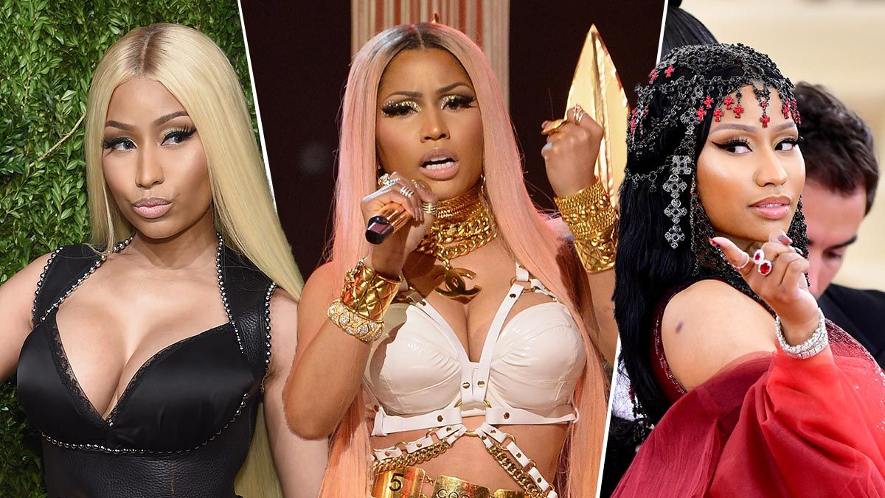

WHO IS SHE ?
Onika Tanya Maraj-Petty (née Maraj; born December 8, 1982), known professionally as Nicki Minaj (/ˈnɪki mɪˈnɑːʒ/ NIK-ee min-AHZH), is a Trinidadian-born[a] rapper and singer based in the United States. Often referred to as the "Queen of Rap", she is known for her musical versatility, animated rap flow, and alter egos. She first gained recognition after releasing three mixtapes between 2007 and 2009. Minaj's debut album, Pink Friday (2010), topped the U.S. Billboard 200 chart. The single "Super Bass" reached number three on the U.S. Billboard Hot 100 chart and was later certified diamond by the Recording Industry Association of America (RIAA). Its follow-up, Pink Friday: Roman Reloaded (2012), explored dance-pop, topped the Billboard 200, and spawned the international top-ten single "Starships". Minaj's collaboration "Bang Bang" (2014) with Ariana Grande and Jessie J became the first female collaboration to be certified diamond. Her next album, The Pinkprint (2014), marked a return to her hip hop roots. The second single, "Anaconda", peaked at number two on the Hot 100. She achieved her first two U.S. number-one singles in 2020 with the collaborations "Say So" with Doja Cat and "Trollz" with 6ix9ine. In 2022, she earned her first solo number-one on the Hot 100 with "Super Freaky Girl", the lead single from her fifth album, Pink Friday 2 (2023), which also debuted atop the Billboard 200. To promote the album, Minaj embarked on the Pink Friday 2 World Tour in 2024, which became the highest-grossing concert tour by a female rapper. Outside of music, her other ventures have included voice roles in the animated films Ice Age: Continental Drift (2012) and The Angry Birds Movie 2 (2019), and supporting roles in the films The Other Woman (2014) and Barbershop: The Next Cut (2016). On television, she served as a judge on the twelfth season of American Idol (2013). Minaj is one of the world's best-selling music artists, with over 100 million records sold.[7] Billboard ranked her as the top-selling female rapper of the 2010s and one of the greatest rappers of all time.[8][9] She has the most number-one albums (3) and top-ten songs (23) in the U.S. for a female rapper. Her various accolades include nine American Music Awards, eight MTV Video Music Awards (including the 2022 Michael Jackson Video Vanguard Award), twelve BET Awards, five Billboard Music Awards, a Brit Award, three Guinness World Records and 12 Grammy Awards nominations. In 2016, Time included her on their annual list of the 100 most influential people in the world. Throughout her career, Minaj's outspoken views, feuds with several rappers, her personal life, and her fanbase have received significant controversy.[10][11]
WHY IS SHE SO FAMOUS ?
Minaj is one of the world's best-selling music artists, with over 100 million records sold. Billboard ranked her as the top-selling female rapper of the 2010s and one of the greatest rappers of all time. She has the most number-one albums (3) and top-ten songs (23) in the U.S. for a female rapper.
HER MUSICAL CAREER
Minaj entered the music business as a backup singer for local aspiring rap singers in New York City. She included videos of her work on her Myspace page, which was seen by a local record label. Minaj eventually came to the attention of rapper Lil Wayne, and the two worked on some mixtapes (recordings), the first of which, Playtime Is Over, appeared in 2007. As other mixtapes were released, Minaj’s exposure grew, and the next year she was named Female Artist of the Year at the Underground Music Awards. In 2009 she signed with Young Money Entertainment, the label founded by Wayne; the label would release numerous hits by Wayne, Minaj, and Drake. She scored her first Grammy Award nomination in 2010 for the song “My Chick Bad,” a collaboration with Ludacris.Her first album for Young Money, Pink Friday (2010), made it to the top of the Billboard 200 chart. It featured sexually explicit lyrics—which are common in her recordings—and Minaj embraced the shock value of her work. The title also reflected her preference for the color pink, a predilection that she used in branding her albums and such later consumer items as her Pink Friday perfume and Pink Pill speakers. Pink Friday earned Minaj three more Grammy nominations, including for best rap album.In 2012 Minaj released her second album, Pink Friday: Roman Reloaded, which featured a number of pop songs, notably the hit single “Starships.” The following year Minaj became a judge on the reality TV singing competition American Idol. She caused controversy with her blunt opinionated judging style and with her frequent disputes with fellow judge Mariah Carey. After one season Minaj left the program. Also in 2013 she claimed title to a record 44 appearances—the most by a female rapper—on the Billboard Hot 100 chartMinaj’s third studio album, The Pinkprint, was released in 2014. It notably contained several breakup songs as well as “Anaconda,” which was a return to her earlier rap style. Queen (2018) featured collaborations with such performers as Eminem and the Weeknd. In 2020, Minaj was featured on two songs that reached number one on the Billboard Hot 100 chart: “Say So,” a collaboration with Doja Cat, and “Trollz,” with 6ix9ine. Two years later she released “Super Freaky Girl,” a humorous and raunchy take on Rick James’s classic 1981 hit “Super Freak.” Minaj’s single debuted at number one on the Hot 100 chart, the first song by a solo female rapper to do so since 1998. Its music video, which depicted Minaj as a pink-haired suburban femme fatale, won Minaj her fifth MTV Video Music Award for best hip-hop video.In 2023 Minaj appeared on the soundtrack for the blockbuster film Barbie, teaming up with rapper Ice Spice and sampling Danish band Aqua’s 1997 dance hit “Barbie Girl” for the song “Barbie World.” The song garnered two Grammy nominations. That same year Minaj released Pink Friday 2, a sequel to her 2010 studio album.
😍😍NEXT😍😍